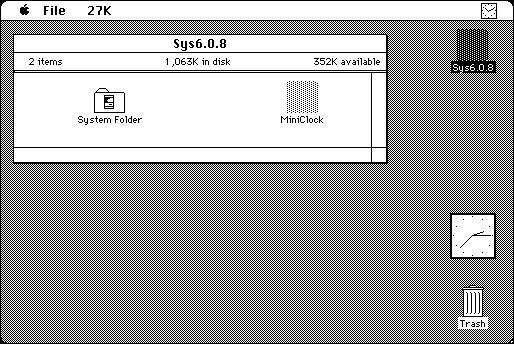

Download
MiniClock1.5.zip (16K) MiniClock 1.5 repackaged into a zipped hfs disk image and checksum file. The disk image can be mounted with Mini vMac.
MiniClock1.5.hqx (16K) MiniClock 1.5 in the original format.
copyright: H. Iimori
mod date: Apr 2, 1996
license: freeware
official url :
MiniClock
A simple analog clock application. The documentation is in Japanese, but the program seems straight forward enough. Double clicking on the clock toggles the display of the second hand.

If you find these downloads useful, please consider helping the Gryphel Project, which hosts them.
Here are the md5 checksums for the downloads, signed with Gryphel Key 5:
--------- GRY SIGNED TEXT --------- 120a7590cd7b3659a89801f927f608f2 MiniClock1.5.zip 46dbca54f2d40b05784e216fec0be273 MiniClock1.5.hqx ------- BEGIN GRY SIGNATURE ------- Gry/4Xa8CFcUzxdN/CRRBSXI4uut41HV8CFnh3NORSEftwN9Xtiq5yy+jQyfMDFa A8n+/Turyp1bZ9htikMCyzm25AWFPhSTOkKAOMO0UmQbZzVfFc9e2iBV+bV19i5l ISeiSnrY3s/x5AJdoqRMJrd9XK7E6Yf0mPMQa2y9TLNDDMqAZtIewH+Be7o/6heG -------- END GRY SIGNATURE --------